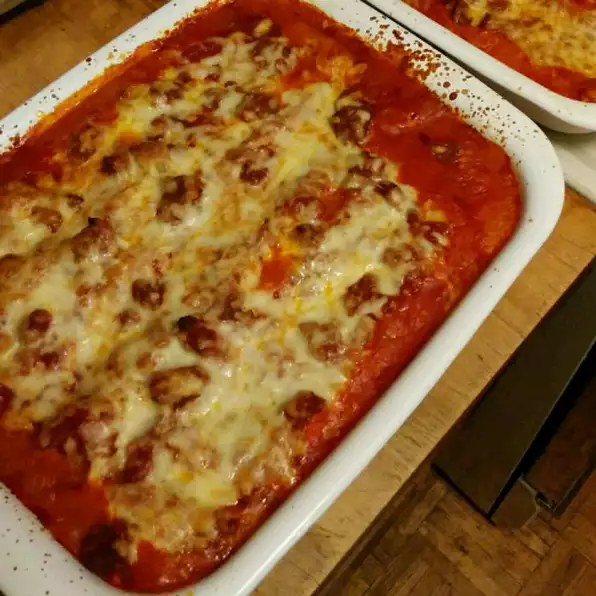

Italian Lasagna Recipe

Description
Homemade Italian Lasagna, made with homemade sauce, and filled with ricotta cheese, Italian sausage, and lots of cheese. Serve with crusty Italian bread.
Ingredients
- 9 thick slices bacon, diced
- 1 onion, chopped
- 1 teaspoon fennel seed
- 1 teaspoon dried oregano
- 1 ½ teaspoons Italian seasoning
- 2 (28 ounce) cans tomato sauce
- 2 pounds Italian sausage
- 1 (16 ounce) package lasagna noodles
- 2 pints part-skim ricotta cheese
- 2 eggs
- 2 teaspoons chopped fresh parsley
- 1 teaspoon dried oregano
- ⅓ cup milk
- 8 slices provolone cheese
- 6 cups shredded mozzarella cheese
Steps
- Brown bacon and onion in a large pan over medium heat. Stir in fennel seed, 1 teaspoon oregano, Italian seasoning, and tomato sauce. Cover, and simmer on low for 4 to 6 hours, or until thick.
- Brown sausage links in a large skillet. Drain on paper towels. Cut into 1 inch pieces.
- Mix together ricotta cheese, egg, milk, parsley, and 1 teaspoon oregano in a medium bowl.
- Layer 1 cup of sauce on the bottom of a 9 x 13 inch pan. Layer with 1/3 uncooked lasagna noodles, 1/2 ricotta cheese mixture, 1/2 sausage pieces, 1/3 mozzarella, and 1/2 provolone cheese. Top with 1/3 sauce. Repeat layers. Top with remaining 1/3 noodles. Spread remaining sauce over the top, and sprinkle with remaining 1/3 mozzarella cheese.
- Bake at 350 degrees F (175 degrees C) for 1 1/2 hours.